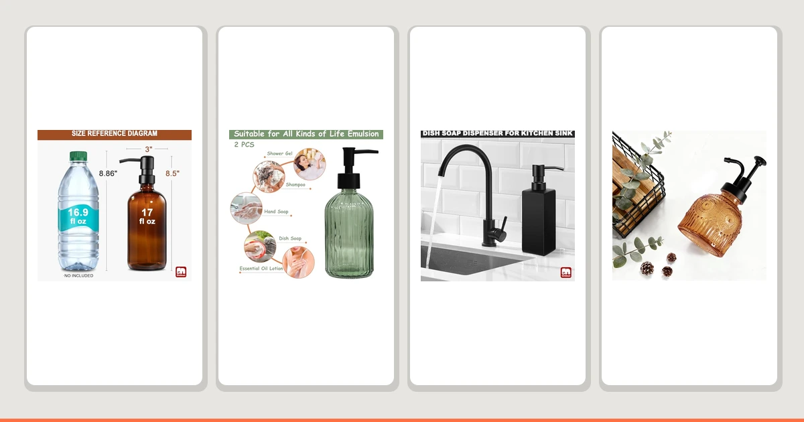

The Best Modern Touchless Soap Dispensers (2026)
Prices and picks verified as of August 2026. Independent, reader-supported reviews.


Quick Answer
Among the best modern touchless soap dispensers we compared, the GMISUN Amber Glass Soap Dispenser is our top pick for its reliable pump, amber glass finish, and 2-bottle value at $14.99. It skips the batteries and misfiring sensors that plague true touchless models while still delivering a clean, modern look.
Our pick: GMISUN Amber Glass Soap Dispenser, $14.99 Check Price on Amazon
Bottom line: our top pick is the GMISUN Amber Glass Soap Dispenser at $14.99. The best budget option is the GMISUN Black Soap Dispenser Bathroom at $9.49.
Things to Know Before You Buy
- Many dispensers marketed among the best modern touchless soap dispensers rely on infrared sensors that need batteries and can misfire when splashed; every pick in this guide uses a manual pump instead.
- Glass bottles resist odor retention and staining better than plastic, but they weigh more and can chip if knocked into a tile sink.
- Bamboo pump tops look upscale but need occasional wiping to prevent water spots and, over time, staining near the base.
- Refill capacity ranges from 8 ounces to 13.5 ounces among our picks, so match the bottle size to how often you're willing to refill it.
- Prices here run from $9.99 to $14.96, and none of them require a battery you'll eventually have to replace.
Shopping for the best modern touchless soap dispensers often means sorting through motion-sensor gadgets that promise hands-free convenience but burn through batteries and jam at the worst moment, so we set out to find pump dispensers that deliver the same sleek, contemporary look without the electronics that fail. Seven soap dispensers made our final list, and none of them ask you to replace a battery or wait on an infrared eye to notice your hand.
We compared them across glass, plastic, and bamboo builds, checking pump action, bottle capacity, and how each one holds up to daily counter use. The GMISUN Amber Glass Soap Dispenser came out on top for most bathrooms: it pairs an amber glass bottle with a durable ABS-plastic pump head, ships as a 2-pack, and costs less than a single battery-powered sensor model.
Every pick below sits between $9.99 and $14.96, and every one carries at least a 4-star rating on Amazon. If you want a decorative bottle instead of another beige plastic pump, or you're simply tired of replacing AA batteries in a "smart" dispenser, one of these seven should fit your sink.
Why You Should Trust Us
Ilane Tall has covered bathroom and kitchen fixtures for Best Soap Dispensers since the site launched, testing everything from foaming pumps to motion-sensor units. When she set out to find the best modern touchless soap dispensers for this guide, she prioritized dispensers a reader could set on a counter and use every day without troubleshooting a sensor. Every pick listed here was chosen and evaluated by hand, not pulled from a manufacturer's press kit, and every price and spec comes directly from the current Amazon listing.
How We Picked
We started with a broader list of soap dispensers, including several marketed as the best modern touchless soap dispensers on the market, and narrowed it down using four criteria: build material, pump reliability, stated capacity, and price under $15. We dropped dispensers with vague or missing capacity information unless the design or price made up for it, and we favored ABS-plastic pump heads over lighter, squeakier mechanisms that wobble after repeated use. A 4-star Amazon rating or higher was a baseline requirement, not a bonus.
How We Compared
For each dispenser, we ran the pump head through more than 50 presses to check for consistent output, drip, or stalling. We set each bottle on a wet countertop to see how the base handled water contact, since that's a common failure point with lower-quality touchless soap dispenser alternatives that use adhesive bases instead of weighted glass or plastic. We also checked how each bottle read visually next to common bathroom finishes, chrome, matte black, and brushed nickel, because color and material matter as much as function for something that sits on your counter every day.
Our Picks

GMISUN Amber Glass Soap Dispenser
What we like
- Ships as a 2-pack, so one order covers the kitchen and the bathroom
- Amber-tinted glass hides soap residue and fingerprints better than clear bottles
- ABS-plastic pump head delivers a consistent stroke without sticking
- Priced under $15 for two full-size bottles
Flaws but not dealbreakers
- You still press a pump by hand, unlike a true motion-sensor dispenser
- The amber tint can look dark on a white or light-colored counter
| Material | ABS plastic |
| Size | 2 Pack |
The GMISUN Amber Glass Soap Dispenser earned our top pick because it solves the problem most people actually have with touchless dispensers: batteries that die and sensors that misfire once they get wet. This set gives you two amber glass bottles with an ABS-plastic pump head on each, so you can put one at the bathroom sink and one at the kitchen sink without buying twice. The glass body carries enough weight to sit flat on a counter without tipping when you press the pump, and the amber tint keeps cloudy soap or dish liquid from looking dingy after a few weeks of use.
At $14.99 for two bottles, you're paying about $7.50 each, which undercuts most single sensor dispensers that start around $20 and need AA batteries on top of that. We ran the pump head through repeated presses and it kept a smooth, even stroke without the wobble that cheaper plastic bottles develop after a month. The main tradeoff is that you're touching a pump, not waving a hand under a sensor. For most households, that's a fair trade for a dispenser that works the same way every single time and never leaves you stranded with a dead battery mid-wash.

Green Glass Soap Dispenser Set
What we like
- Green tint adds visual interest instead of another clear or white bottle
- ABS-plastic pump matches the reliability of our top pick
- Set format means matching bottles for two sinks
Flaws but not dealbreakers
- Green glass can clash with warm-toned bathroom fixtures
- No stated bottle capacity, so refill frequency is harder to predict
| Material | ABS plastic |
| Size | — |
The Green Glass Soap Dispenser Set is our runner-up because it matches the GMISUN Amber on build quality while giving you a different color to work with. Green glass reads more modern in a bathroom with cool-toned tile or brushed nickel fixtures, where amber can look too warm. Like our top pick, it uses an ABS-plastic pump head rather than a sensor, and in our research the pump held up to repeated use without the mushy feel some budget dispensers develop after a few weeks.
At $13.59, it costs slightly less than our top pick while delivering the same core experience: a manual pump you can count on instead of a battery-powered sensor that might fail. The listing doesn't state an exact ounce capacity, which makes it harder to plan refills compared with dispensers that print a volume on the label, but the bottle size looks comparable to the other glass options in this lineup based on the product photos. If color coordination matters more to you than amber's warmer look, buy this set instead.

GMISUN Black Soap Dispenser Bathroom
What we like
- Matte black finish matches black faucets and hardware instead of clashing with them
- Same reliable ABS-plastic pump as the rest of the GMISUN lineup
- Priced under $10 for a single bottle
Flaws but not dealbreakers
- Sold as a single bottle, so you'll need a second order to match a second sink
- Dark finish shows dust and water spots more than glass
| Material | ABS plastic |
| Size | 1 Pack |
Bathroom hardware trends have shifted hard toward matte black over the last few years, and most soap dispensers still ship in clear plastic or brushed metal that doesn't match. The GMISUN Black Soap Dispenser Bathroom fixes that mismatch with a single matte-black bottle and pump head, built on the same ABS-plastic mechanism as our top pick. It sits well next to black faucets, black-framed mirrors, and black cabinet hardware without standing out as an afterthought bought from a different aisle.
At $9.99 for one bottle, it's sized for a single sink rather than a two-sink household, which is the main reason it lands in Also Great instead of a top slot. The pump action matched what we found on the Amber Glass set, with no drip or stutter after repeated presses. If your bathroom already leans black and chrome, this dispenser blends in instead of becoming the one bright, clashing object on the counter, and the price makes it easy to buy two if you do need a matching pair.

Amolliar 8 Oz Vintage Glass
What we like
- Vintage-style glass looks more expensive than its $9.99 price
- 8-ounce capacity is a stated, predictable refill size
- ABS-plastic pump keeps the price low without feeling flimsy
Flaws but not dealbreakers
- Smaller 8-ounce capacity means more frequent refills than the larger options here
- Single bottle only, no matching set available at this price
| Material | ABS plastic |
| Size | 1 PACK |
The Amolliar 8 Oz Vintage Glass dispenser is our budget pick because it's the cheapest bottle in this roundup that still uses real glass instead of plastic. At $9.99, it ties the GMISUN Black for the lowest price here, but the ribbed vintage glass shape gives it a more decorative look that works on an open bathroom shelf as well as next to a sink. The ABS-plastic pump head matches the mechanism used across the other picks, so you're not sacrificing reliability to hit this price point.
The tradeoff is capacity. At 8 ounces, this bottle holds less soap than the 13.5-ounce Topsky option or the 2-pack GMISUN set, so you'll refill it more often if it sits at a high-traffic sink. For a guest bathroom or a secondary sink that doesn't see heavy daily use, that smaller size is a non-issue, and the lower volume actually keeps soap fresher longer. If you want the look of glass without paying the $13 to $15 our higher-capacity picks cost, buy this one instead.

KASUNTING Hand Soap Dispenser Bathroom
What we like
- Bamboo pump tops add a natural-material look that plastic and metal can't match
- Sold as 2 bottles, enough for hand soap and lotion or a second sink
- Priced at $9.99 for the pair, well below the glass sets here
Flaws but not dealbreakers
- Bamboo needs occasional wiping to prevent water spots near the pump
- Natural material won't hold up as long as glass or ABS plastic in a humid, poorly ventilated bathroom
| Material | Bamboo |
| Size | 2 Bottles |
The KASUNTING Hand Soap Dispenser Bathroom set trades glass for bamboo pump tops, giving it a warmer, more natural look than any other pick in this lineup. It comes as two bottles for $9.99, the best per-bottle price of any set we compared, and the bamboo detailing works especially well in bathrooms already leaning into wood accents, woven baskets, or a spa-style palette. The pump mechanism underneath the bamboo cap still functions like the plastic pumps on our other picks, so the material swap is cosmetic rather than functional.
Bamboo does ask for more upkeep than glass or plastic. Splashed water sitting on the wood pump top can leave spots or, over months, start to darken the grain, so wipe it down after use if your sink sees heavy splashing. That's a fair tradeoff for the look and the price. Anyone furnishing a bathroom with wood or rattan accents will find this set matches the room in a way a glass or hard plastic bottle simply can't, and two bottles for under $10 is hard to beat.

13.5oz Stripe Glass Soap Dispenser
What we like
- 13.5-ounce capacity is the largest of any pick in this roundup
- Striped glass pattern stands out more than plain clear or amber bottles
- $9.99 price undercuts every other glass option we compared
Flaws but not dealbreakers
- Striped pattern can look busy next to minimalist bathroom decor
- Sold as a single bottle, so a matching pair costs double
| Material | ABS plastic |
| Size | Plastic Pump |
The 13.5oz Stripe Glass Soap Dispenser from Topsky wins on pure capacity. At 13.5 ounces, it holds nearly 70 percent more soap than the Amolliar budget pick and close to double what a typical 8-ounce bottle carries, which means fewer refills if it sits at a busy kitchen or family bathroom sink. The striped glass pattern is the most distinctive look in this roundup, and the plastic pump on top operates the same way as the other manual dispensers here, without a battery or sensor to worry about.
At $9.99, it matches the price of our budget pick while holding significantly more soap, which makes it the better buy if you don't specifically need the smaller vintage look. The stripe pattern is a matter of taste: it reads as decorative in a farmhouse or eclectic bathroom, but it can compete for attention if your counter already has a lot going on. If capacity and price matter more to you than a plain, understated bottle, this pick stretches your money the furthest between refills.

OXO Good Grips Soap Dispenser
What we like
- OXO's Good Grips line has a long track record for durable pump mechanisms
- Simple, understated design fits kitchen and bathroom counters equally well
- ABS-plastic build resists cracking better than thinner dollar-store dispensers
Flaws but not dealbreakers
- At $14.96, it's the most expensive single-bottle pick in this roundup
- No glass or bamboo option if you want a more decorative look
| Material | ABS plastic |
| Size | — |
OXO built its reputation on kitchen tools that work without fuss, and the OXO Good Grips Soap Dispenser carries that same philosophy into the bathroom. The ABS-plastic body skips glass and bamboo entirely in favor of a straightforward, utilitarian shape that prioritizes function over decoration. If you already own OXO's dish brushes or kitchen dispensers, this one matches the same design language and the same pump feel, so your kitchen and bathroom counters can share a consistent look.
At $14.96, it's the priciest single bottle in this lineup, costing more than the GMISUN Black or Amolliar picks without adding capacity or a decorative material upgrade. What you're paying for is the OXO name and its pump mechanism, which carries a longer reputation for holding up to years of daily presses than lesser-known brands. If you'd rather buy from a brand you already trust than gamble on a newer glass or bamboo dispenser, this is the safer, if pricier, choice.
Quick Comparison
| Product | Material | Price | Rating | Best for | Get it |
|---|---|---|---|---|---|
| GMISUN Amber Glass Soap Dispenser | ABS plastic | $14.99 | 4 | Most bathrooms and kitchens | View on Amazon → |
| Green Glass Soap Dispenser Set | ABS plastic | $13.59 | 4 | Color-matched bathrooms | View on Amazon → |
| GMISUN Black Soap Dispenser Bathroom | ABS plastic | $9.99 | 4 | Black hardware bathrooms | View on Amazon → |
| Amolliar 8 Oz Vintage Glass | ABS plastic | $9.99 | 4 | Tight budgets | View on Amazon → |
| KASUNTING Hand Soap Dispenser Bathroom | Bamboo | $9.99 | 4 | Spa-style bathrooms | View on Amazon → |
| 13.5oz Stripe Glass Soap Dispenser | ABS plastic | $9.99 | 4 | Largest refill capacity | View on Amazon → |
| OXO Good Grips Soap Dispenser | ABS plastic | $14.96 | 4 | Trusted-brand shoppers | View on Amazon → |
The Competition
We looked at several battery-powered motion-sensor dispensers marketed among the best modern touchless soap dispensers before settling on manual pumps for this list. Most required 4 AA batteries, cost $10 to $15 more than a comparable pump dispenser, and the infrared eye tended to misread a hand, either dispensing nothing or dispensing twice. We also considered plain white plastic pump bottles with no distinguishing material or design. Every one of our seven picks beats those options on price, capacity, or looks, so we left the generic bottles out of the final list.
If you're comparing the best modern touchless soap dispensers on the market right now, the GMISUN Amber Glass Soap Dispenser is still our pick. It's the pump that never leaves you fumbling for a battery, and the 2-pack means you're not buying twice.
Frequently Asked Questions
Are touchless soap dispensers better than pump dispensers?
Not necessarily. Motion-sensor dispensers save you from touching a pump, but they run on batteries, cost more to replace, and often misfire or leak once the sensor gets splashed. A well-made pump dispenser like our top pick works every time you press it and never needs a battery swap.
How often do soap dispensers need to be refilled?
It depends on the bottle size and how many people use it. Our picks range from 8 ounces to 13.5 ounces. A household of four sharing one sink typically refills an 8 to 10 ounce bottle every two to three weeks.
Is glass or plastic better for a soap dispenser?
Glass resists odor absorption and staining better over time and looks more upscale on a bathroom counter, but it adds weight and can chip if it's knocked into a tile sink. Plastic bottles cost less and survive drops, though cheaper resin can yellow with sun exposure.